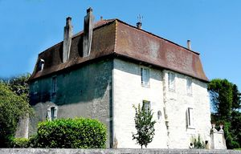
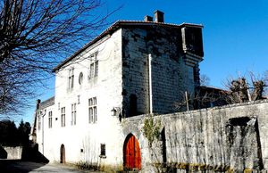
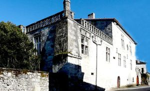
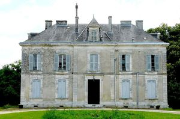
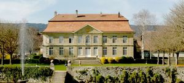

Recensement Jean-Claude Truffet
| Département | 24 — Dordogne |
| Canton | Brantôme |
| Commune | Lisle |
| Type d'édifice | Château |
| Période d'origine | XVI-XVII |





Deux châteaux à Lisle château-Bas du XVIe siècle, château-Haut, de style Renaissance construit au XVIe siècle sur les vestiges d'un précédent château fort remontant au XIIe siècle ; il est partiellement inscrit aux M.H. depuis 1942 pour un escalier monumental en pierre. Le manoir de la Peyzie, ancienne habitation de la famille de Labrousse de la Peyzie du XIXe siècle, le manoir de la Rochette, ancienne propriété de la famille de Fumel et de la famille Linard du XVIIIe siècle.
LISLE aussi appelé, le petit Versaille de l'Isle, ce magnifique château à été construit en 1696 par Charles de Chandelieu, un officier de l'armée française, cette ancienne demeure fut dans un premier temps habitée par la famille Chandieu, jusqu'à la fin du XVIIIe siècle. Durant le XIXe siècle, résida d'abord François Louis Roulet de Neuchâtel puis fut transmis par mariage aux Cornaz de Montet Cudrefin. En 1876, la commune de l'Isle rachète le château et le restaure. Aujourd'hui, le bâtiment accueille des locaux communaux, des logements et des classes d'écoles. CHATEAU Haut, ce fief avait pour propriétaire la famille des Saint-Astier, et passa aux Preyssac de Léonce, puis aux Bertin, et enfin au XVIIIe siècle,aux Fargeot qui le possèdent encore.
LISLE présente un plan en U, avec corps de logis principal et deux ailes en retour d'équerre délimitant une cour d'honneur. Le corps central abrite les anciens salons et appartements seigneuriaux, et les ailes les services et locaux secondaires. Il fut le premier monument régional dont l'architecture provient du classicisme, est un monument riche en anecdotes. Tirée de l'époque du classicisme, née en france vers 1700, cette bâtisse ressemble fortement au courant architectural à l'époque où fut construit le château de Versaille. Depuis 1941, l'édifice est classé comme M.H. CHATEAU-BAS de plan carré à deux niveaux et à toit brisé. CHATEAU-HAUT Au XIIIe siècle, des remparts sont construits qui enclosent la ville en une bastide. Au siècle suivant, la cession de Lisle à lautorité directe du roi de France, Philippe Le Bel, accorde à la ville, notamment par lautorisation de foires et de marchés réguliers. Cest au XVIe siècle, pendant les guerres de Religion, que la ville assiégée qui résiste et veut rester fidèle au roi catholique perd une grande partie de ses fortifications. Corps de logis rectangulaire à deux niveaux sur soubassement accolé en prolongement de chaque côté de dépendances avec terrasses. PEYZIE manoir de plan rectangulaire à cinq travées avec pavillon saillant central plein cintre avec lucarne sur comble du troisième niveau sur un toit en croupe.
Peyzie famille de Labrousse Rochette famille de Fumel Lisle Charles de Chandelieu
"
A Lisle château Bas grav 1-et 5, Château Haut grav 2-3. Peyzie grav 4